Charter is a co-op fishing game about taking a boat out with friends: finding fish, fighting them on the line and dealing with them once they’re loose on deck. In these posts I’m going to walk through how it’s being made, starting from the very first version, and explain the interesting parts as I go. There will be code for anyone who wants it, but you don’t need to read it to follow along.
That first version was a single fishing station on a small open boat, on a sea made from three sine waves. Here it is from the cast to the catch. Watch the very end, where the fish is supposed to go back overboard.
Following the fish
The fishing is based on Rye’s video I Made a Game to Face my Fear of Fish, about making Keep on Fish’n. If you haven’t seen it, the idea is simple. The fish moves left and right along a bar, you steer a window with A and D to stay over it, and you reel with Space. What makes it work is that the reel is never locked. You can wind in whenever you like; you just pay for it in tension if you’re not lined up.
I got that part wrong at first. When I described what I wanted, I wrote that you “can only reel when marker is on fish icon.” Rye’s version is looser than that, and it’s better. Because the reel is always available, you’re making a small decision every second of the fight: am I lined up well enough to risk it?
How the fish moves along that bar matters more than you might expect. If it jumped around randomly you couldn’t track it, only react to it, and the fight would feel like luck. So its position is a slow, wide sine wave with a faster, smaller one added on top:
target = clampf(0.5 + sin(fight_time * 1.25 + offset) * 0.28
+ sin(fight_time * 2.3) * 0.08, 0.08, 0.92)The comment above that line in the original script says the two frequencies “produce a learnable, smooth fish rather than frame-random motion.” Play for a few seconds and you start leading it, the way you’d lead a moving target, with the small wave keeping you honest. The offset comes from the sea’s seed, so every sea has its own pattern. On top of Rye’s design, the prototype gave you a 2.4-second window to strike once the float dips, and made the fish run every six and a half seconds, when even well-aligned reeling adds tension.
Everything else comes from the two inputs working against each other. It’s easiest to see as a table. Tension runs from 0 to 1, the line snaps at 1, and the numbers are changes per second.
| Reeling | Not reeling | |
|---|---|---|
| Over the fish | The line comes in at 1.45 m/s, up to 30 percent faster as the fish tires. Tension eases slowly (−0.075) but climbs during a run (+0.12). | Tension eases quickly (−0.3). The fish takes back 0.35 m/s of line. |
| Off the fish | Tension climbs fast (+0.27). From where a fight starts, that snaps the line in about three seconds. The fish takes 0.32 m/s. | Tension creeps up (+0.055). The fish takes 0.7 m/s, twice as much as when you’re over it. |
The bottom-right cell is a good example of how much a tiny rule can change. Originally, letting go of Space relieved tension no matter where your window was. That sounds harmless, but it meant the safest thing to do in a bad moment was stop reeling and stop paying attention. Now strain keeps building slowly while you’re off the fish, as it does in Rye’s game, so you always have a reason to stay on it. Reeling on target was also slowed, from 2.5 to 1.45 meters per second, which makes a fight last noticeably longer.
If you’re building something like this yourself, here’s the decision I’d copy: keep the rules in one small script that has no idea what anything looks like. Charter’s fishing model is handed your steering, the reel button and the wave load every physics step, through model.update(dt, steer, reel, wave_load), and works out the distance, the fish’s stamina and the tension. The scene just reads those numbers to place the fish and bend the rod. Nothing drawn on screen can land or lose a fish. The payoff comes quickly. A replay can feed recorded input through the same call as the keyboard, and with a fixed seed the fish does exactly the same thing every time, so when you change a number you can watch the same fight again and see what the change did. The fishing has been rebuilt several times since, and that split has survived all of it.
The rod, the float and the line
If you snap a float straight to the water height, it looks glued to the surface. Real floats have some weight to them. They dip, overshoot a little and settle. The easiest way to fake that is a spring. Picture the float on a rubber band tied to the water: the further it strays, the harder it’s pulled back, and a little friction stops it bouncing forever. In code, that’s two lines:
float_velocity += ((desired_y - float_y) * 90 - float_velocity * 11) * dt
float_y += float_velocity * dtThe first number is how stiff the band is and the second is the friction. With these values a float overshoots by about a tenth and is still in under a second. When a cast lands, the float starts slightly below its resting height and already sinking, so it ducks and bobs back up on its own. The bite doesn’t have an animation either. It pulls the float’s target down 22 centimeters and shakes it about three and a half times a second, and the spring turns that into the twitch you’re watching for in the clip below.
The rod uses the same trick. Its bend chases a target of a base amount plus the line tension, so the harder the fish pulls, the further the tip comes down, and you can read the fight from the rod without looking at the bar. The bend grows with the cube of the distance along the rod, which keeps the butt stiff and puts most of the curve in the tip, like a real rod. It also leans toward the fish, which was on my original list of things I wanted from the reference: “rod moves with fish.”
The line took more work. The first version was a curve drawn from the rod tip to the float with a sag in the middle, and it looked fine in screenshots and wrong in motion. It had no memory, so whenever the float moved, the whole curve jumped to its new shape in a single frame. Real line lags, swings and settles.
Its replacement is 21 points joined by 20 segments. Think of beads on a thread: each bead keeps drifting the way it was already going, gravity pulls it down, and the thread stops neighboring beads from drifting too far apart. The drifting part is these three lines. Each point remembers where it was last step, and the difference between then and now is its velocity:
var pos := points[i]
points[i] += (points[i] - previous[i]) * 0.91 + Vector3.DOWN * 7.0 * dt * dt
previous[i] = posThis is called Verlet integration, and it’s the standard way to do rope and cloth in games. The 0.91 bleeds off a little speed each step so the line doesn’t swing forever. After that, 18 quick passes nudge each pair of neighbors back to the right spacing, with the ends pinned to the rod tip and the float. Tension decides what “right” means: a slack line gets 5.5 percent more length than the straight distance between its ends, so it can sag, and a taut one gets 0.2 percent, so it pulls straight.
Try it here. Drag the float somewhere and let go, and you’ll see the whip that the old curve couldn’t do. Then switch to the original curve and do the same thing.
The line is purely for looks, by the way. How far it stretches has nothing to do with whether you keep the fish. That’s the fishing model’s job.
The sea
Here’s a trick worth knowing. The water is three sine waves running in different directions, and the same formula runs in two places: in the shader that draws the surface, and in a script the boat and float use to ask how high the water is at any point. As long as the two agree, the float sits on the water you can see. If they drift apart, the float hovers or sinks and nothing else you do will fix it. Charter’s water is far more complicated now, but it still keeps that rule.
The boat rises and falls with the height under its center and tilts by comparing heights across its width and length. That isn’t buoyancy, but this boat never went anywhere, so faking it was fine. The boat itself came from a Blender script that builds it out of boxes, cylinders and one custom hull: a faceted teal hull with a coral stripe, deck planks, a bench, canopy supports and a mint cooler with a latch. If you’ve ever brought a model into a game engine and found it lying on its back, this is why the script converts every position on the way in. Godot’s up axis is Y and Blender’s is Z, so a point at (x, y, z) in the game becomes (x, −z, y) in Blender.
The first render was far too bright. Lowering the light and changing the tone mapping pulled it back, and the same pass changed how the rod bends and gave the line its physics.
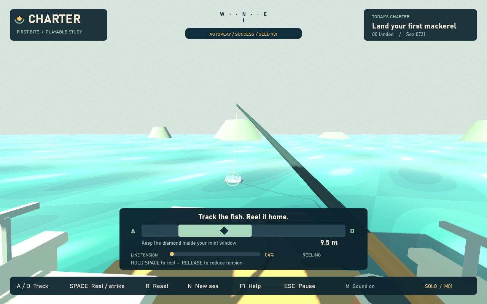
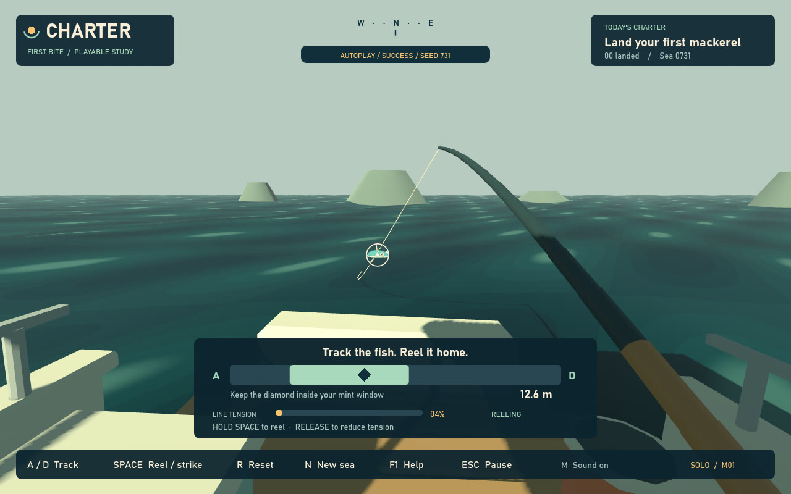
Throwing it back
So, the end of the recording. Q is supposed to throw the fish back into the sea. Instead it lifts, hits the seat and drops back onto the deck.
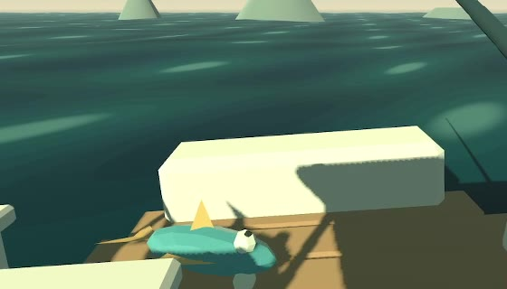
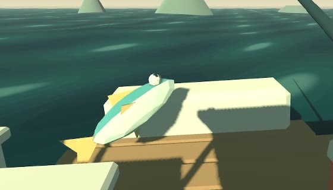
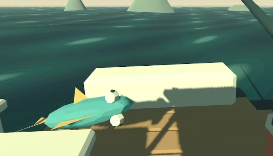
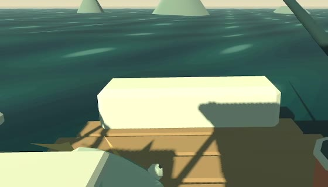
A throw sounds like one line of code. It took four fixes. The throw went wherever the camera was pointing, and since you’re usually looking down at a fish when you pick it up, it went straight into the deck. It now uses the direction you’re facing and ignores where you’re looking up or down, with a fixed 8 meters per second forward and 8 up. It also cancels whatever the fish was already doing, so a fish caught mid-flop doesn’t leave with the flop added on top. A fish lying against the seat could still clip it on the way up, so the throw now starts from a point by the rail.
The last fix is a Godot trap that’s worth knowing if you use the engine. Setting a physics object’s position or velocity from ordinary game code can fight with the physics engine, and Godot’s documentation recommends doing it inside the body’s own physics callback, _integrate_forces, instead. So the throw is queued up and applied there:
func _integrate_forces(state: PhysicsDirectBodyState3D) -> void:
if launch_pending:
state.transform = Transform3D(Basis.IDENTITY, launch_position)
state.linear_velocity = launch_velocity
state.angular_velocity = Vector3(1, 0, 0.6)
state.sleeping = false
launch_pending = falseThe automated test for the throw had its own lesson. It passed as long as the fish was moving fast afterwards, and a fish bouncing off a seat is moving fast. It now checks that the fish has actually cleared the bow and isn’t touching the boat. The recording was made before the last of these fixes.
The fish on deck
Once it’s landed, the fish becomes a rigid body with its own weight as its mass. Every 1.4 seconds, if it’s touching something, it gets a small push upward and a twist, and in between, the model rocks side to side on a fast sine wave. That’s the whole flop:
if model.clock - last_flop > 1.4 and catch_body.get_contact_count() > 0:
last_flop = model.clock
catch_body.apply_central_impulse(Vector3.UP * 1.25)
catch_body.apply_torque_impulse(Vector3(0.08, 0, 0.18))Four lines, and it was my favorite part. Here’s what I wrote after playing it:
Best was the feel of the fish itself flopping around on deck, overall solid first pass on fishing. Worst was definitely the overexplanatory and uninspired UI.
The interface earned that. Every step of a catch had its own panel, with a headline, an instruction underneath and a row of numbered steps, while the same key hints ran along the bottom of the screen the whole time. The headlines were written like a fishing buddy talking you through it, and they never stopped.

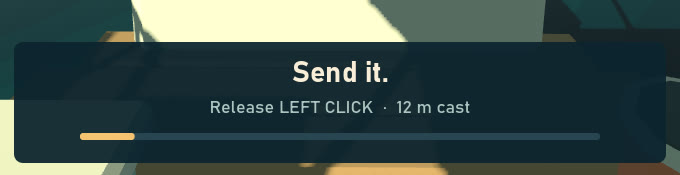

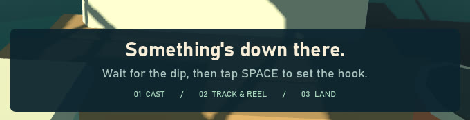
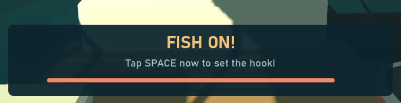
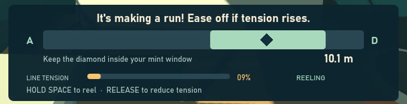

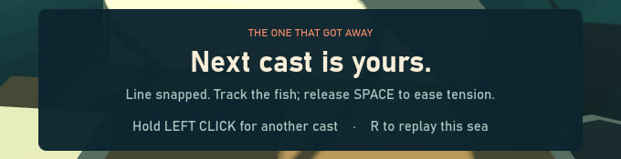
Both notes shaped what came next. The flop grew into a fish with a jointed body that bends and flops properly, and the interface went in the bin. If there’s anything here you’d like me to dig into further, or something about the game you’d like to see covered, let me know. Next time, a second player comes aboard.